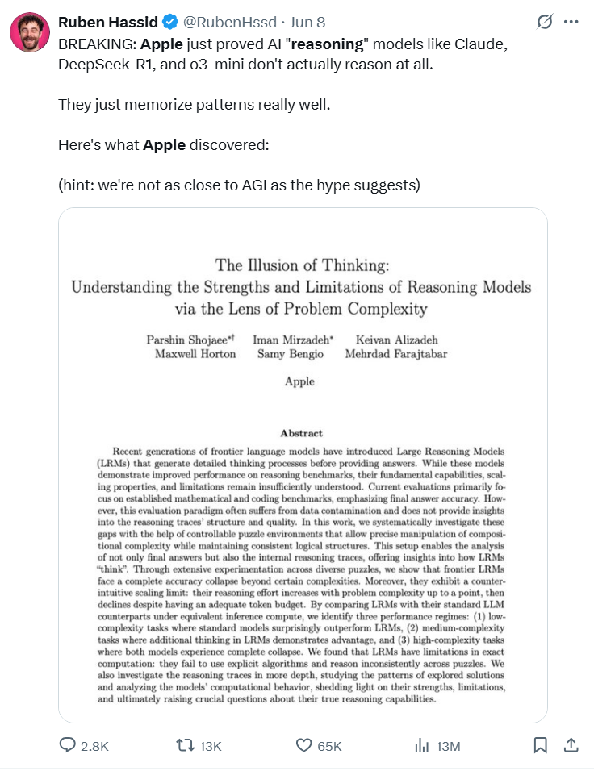
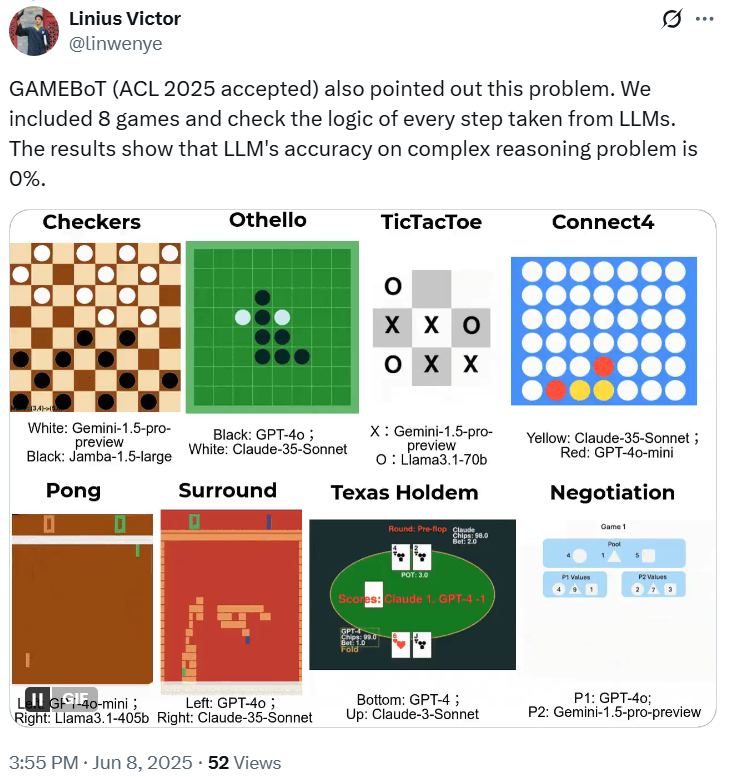

引言
近期，一系列被称为大型推理模型（Large Reasoning Models, LRM）的新模型被提出，其特点是在生成最终答案前会产生详细的思考过程。尽管这些模型在多个推理基准上展示了性能提升，但学术界对其基本能力、扩展规律及内在局限性的理解仍不充分。现有评估范式主要依赖固定的数学和编程基准，这可能受到数据污染问题的干扰，且无法对推理过程的结构和质量提供深入洞察。
针对上述空白，苹果公司（Apple）的研究者发表了一篇题为《The Illusion of Thinking: Understanding the Strengths and Limitations of Reasoning Models via the Lens of Problem Complexity》的论文。该研究旨在通过一个可控的实验环境，系统性地探究前沿LRM的推理能力。
投资公司Bootstrapped创始人Ruben Hassid在社交平台X上转发了苹果的这篇论文，并评论称：“苹果刚刚证实，Claude、DeepSeek-R1以及o3-mini等AI推理模型其实并不具备真正的推理能力，它们只是在模式记忆方面表现良好而已。”这条推文引发广泛关注，浏览量超过1000万，评论数也超过6500条。知名风投机构Lux Capital的联合创始人兼合伙人Josh Wolfe也转发推荐了这篇论文。

同时有网友指出：GAMEBoT（ACL 2025 接受）也指出了这个问题。我们收录了 8 个游戏，并检查了从 LLM 中采取的每一步的逻辑。结果表明，LLM 在复杂推理问题上的准确率为 0%。

然而，这篇论文也引起了不少争议。苹果团队试图通过实验论证：当下被称为“推理模型”的AI，其实只是执行复杂模式匹配的机器。一些批评者将这篇论文称为“垃圾论文”，并用“拿锤子去敲螺丝”来形容苹果团队实验方法的不恰当。有网友通过复现实验来指出其逻辑问题，比如认为游戏规划次数并不能代表任务复杂度，而大模型失败仅是因为输出过长等技术性限制。
此外，还有人挖出了论文作者的背景，发现联合一作竟是一名实习生，目前是弗吉尼亚理工大学计算机科学专业的三年级博士生，这也成为部分质疑者攻击的焦点。
下面就让我们深入paper本身👇
一、研究动机与方法：从数学基准到可控谜题
论文首先指出了当前基于数学基准进行评估的潜在问题。通过对AIME24和AIME25等基准的分析，研究者观察到模型的性能表现与基准年份及人类感知的难度存在不一致性，这可能暗示了数据污染对评估结果的干扰。由于数学基准难以进行可控的复杂度调整，也无法完全排除数据污染的风险，因此研究者提出了一种新的评估方法。
该方法基于四种可控的谜题环境：汉诺塔（Tower of Hanoi）、跳棋（Checker Jumping）、过河问题（River Crossing）和积木世界（Blocks World）。这些环境具备以下特点：
- 复杂度可控： 通过调整谜题的初始参数（如盘子、棋子数量等），可以系统性地、量化地改变问题的组合复杂度。
- 避免数据污染： 相较于广泛存在的网络数学题解，特定复杂度的谜题实例在训练数据中出现的概率较低。
- 评估客观： 利用模拟器，可以对模型生成的每一步解题步骤进行确定性的正确性验证，从而实现对推理过程的精确分析。
二、核心实验发现：性能区间、能力边界与推理模式
研究团队基于上述实验环境，对包括Claude 3.7 Sonnet、DeepSeek-R1和OpenAI o系列在内的多款前沿模型进行了测试。
1. 三个复杂度性能区间的识别：
通过对比LRM（生成思考过程）与其标准LLM对应版本（不生成思考过程）在同等计算资源下的表现，研究识别出三个与问题复杂度相关的性能区间：
- 低复杂度区： 标准LLM的性能与LRM相当，甚至在某些情况下更优。
- 中等复杂度区： LRM开始展现出性能优势，其生成的思考过程对解决问题有正面作用。
- 高复杂度区： 两种模型的准确率均下降至零。LRM能略微推迟性能崩溃点的到来，但最终仍会失效。
2. 推理努力与复杂度关系的反常模式：
对LRM生成的思考过程长度（以Token数量衡量）进行分析后，发现一个非线性的关系：
- 在复杂度从中低水平增长时，模型的思考Token数量随之增加。
- 当复杂度接近模型的性能崩溃点时，即使有充足的生成长度预算，模型分配给思考的Token数量反而呈现下降趋势。研究将此现象描述为LRM在推理能力上的一种伸缩性限制。
3. 对思考过程的内部状态分析：
借助模拟器对LRM生成的中间步骤进行验证，研究揭示了随复杂度变化的内部推理模式：
- 低复杂度下： 模型通常在思考过程的早期就能生成正确解，但之后会继续探索不正确的路径。
- 中等复杂度下： 模型需要先探索一系列不正确的路径，才会在思考过程的后期找到正确解。
- 高复杂度下： 模型在整个思考过程中均未能生成任何正确的解决方案。
三、关于模型推理机制的进一步观察
论文还报告了两个值得关注的实验结果，对LRM的内在机制提出了疑问：
1. 对明确算法的执行能力：
在汉诺塔任务中，即便在提示中向模型提供了完整的解题算法，其性能也未见提升，性能崩溃点与未提供算法时基本一致。该结果表明，模型在严格遵循和执行给定算法指令方面存在局限。
2. 在不同谜题间的性能不一致性：
模型在不同类型的谜题上表现出显著的能力差异。例如，在汉诺塔任务中，模型可以连续生成上百个正确的移动步骤；但在一个解法步骤数更少的过河问题实例中，模型却在数步之内就出现错误。研究者推测，这种差异可能与不同类型谜题的解法在网络训练数据中的普遍程度有关。
四、结论与局限性
该研究的结论指出，当前的前沿LRM在处理具有组合复杂度的任务时，表现出明确的能力边界。其性能在超过特定复杂度阈值后会完全崩溃，并且其推理“努力程度”存在反直觉的伸缩性限制。对推理过程的分析和特定实验（如提供算法）的结果，对模型是否具备可泛化的、基于符号操作的推理能力提出了疑问。
研究者也承认该工作的局限性，包括所选谜题任务的范围相对狭窄，可能无法完全代表真实世界中知识密集型的复杂推理问题；同时，实验主要依赖闭源模型的API，限制了对模型内部结构的直接分析。这项工作为未来研究LRM的真实能力和内在机理提供了新的视角和实验方法。